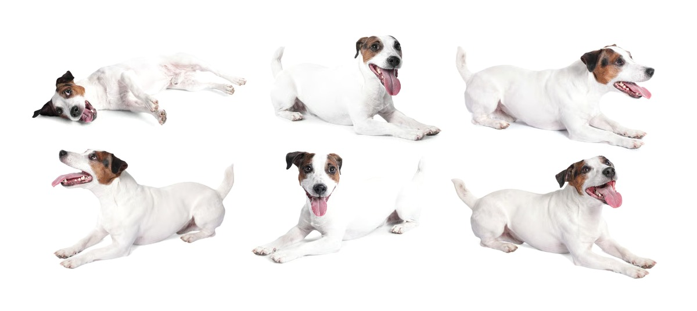

A Pata Amiga nasceu em 2015 do sonho de um grupo de amigos apaixonados por animais. O que começou como uma pequena loja de bairro hoje é referência em cuidado, saúde e bem-estar para cães, gatos e outros bichinhos de estimação.
Acreditamos que cada pet é parte da família. Por isso, unimos uma equipe de veterinários experientes, tosadores qualificados e atendentes que tratam o seu melhor amigo com todo o carinho que ele merece.
Nosso espaço foi pensado para que o seu pet se sinta em casa: ambiente climatizado, higienizado diariamente e cheio de gente que ama o que faz. Venha nos conhecer e descubra por que milhares de tutores já confiam na gente.
Fale com a genteProfissionais apaixonados e sempre atualizados para cuidar da saúde do seu pet com segurança.
Produtos de qualidade, hora marcada e muito carinho para o seu bichinho sair lindo.
Rações, petiscos, brinquedos e acessórios das melhores marcas em um só lugar.
Agende um horário ou venha nos fazer uma visita. Vai ser um prazer cuidar do seu amigo de quatro patas!
Agendar atendimento